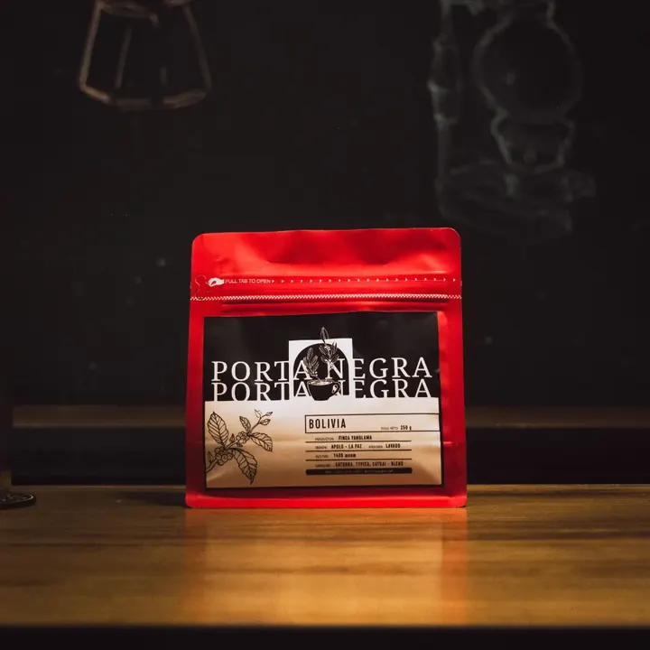
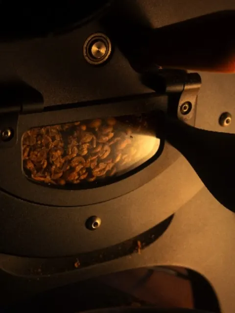
Grano del mes
Origen Bolivia
250 g de café tostado por nosotros, para llevarte a casa.
$22.700
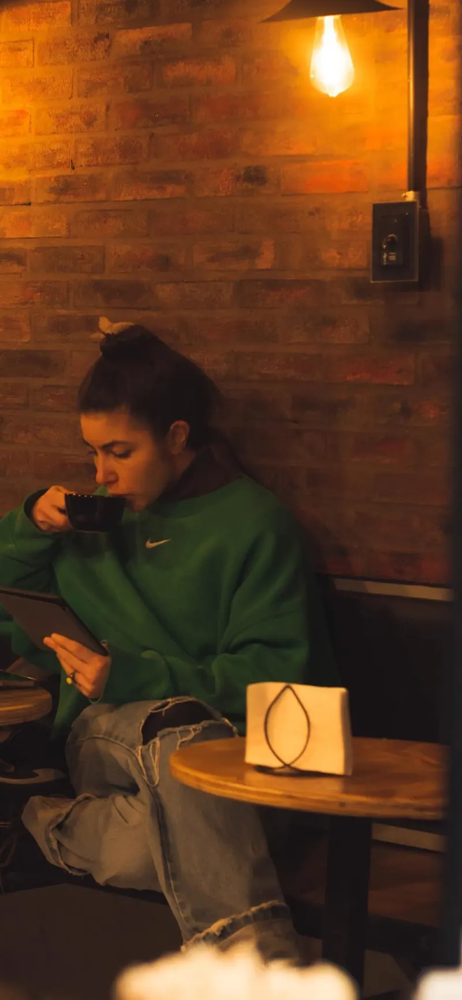
Café de especialidad · Villa Urquiza · Saavedra
Café tostado por nosotros, filtrados de autor, alfajores, cookies y chipa recién horneada. Dos puertas, el mismo café.
Carta · Temporada 2026
Encargos para retirar
Alfajores de autor, cookies y chipa para pasar a buscar por la Porta que te quede cerca. Encargás con un día de anticipación y pagás al retirar: en efectivo tenés 10% off.
En la compu podés arrastrar cada etiqueta a la caja.
Sucursales
Tocá una puerta: la pizarra te dice si está abierta ahora, con el horario de cada una y cómo llegar.
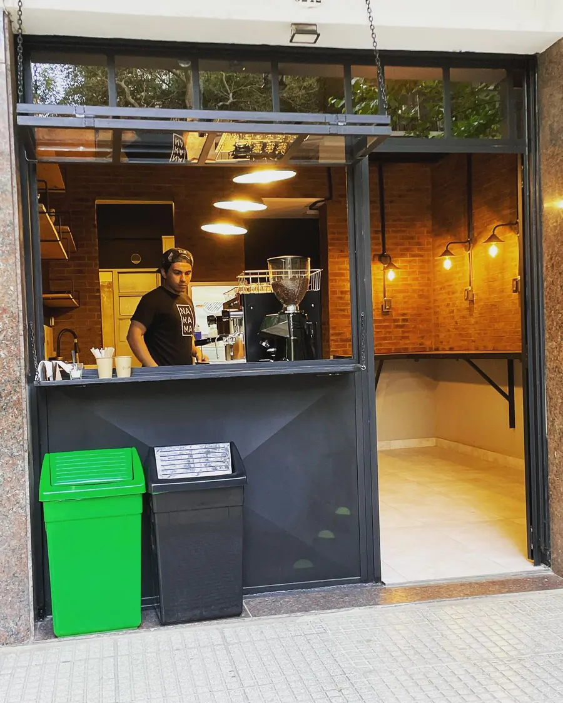
Lunes a viernes
Lunes a viernes
8:00 a 20:00 hs
Findes y feriados
9:00 a 20:00 hs
La primera Porta. Pet friendly, con snacks para perros.
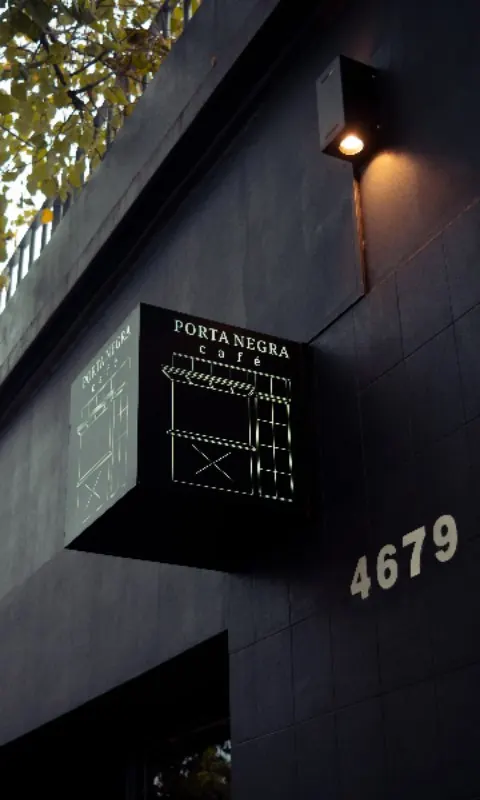
Martes a domingo
[Horario a confirmar]
Lunes cerrado
La esquina del cartel negro, con terraza: acá pasan el yoga, el Coffee Club y las catas.
Agenda · en Porta Saavedra
Yoga en la terraza, Coffee Club con DJ y catas de vino. Anotate por WhatsApp y te guardamos el lugar.
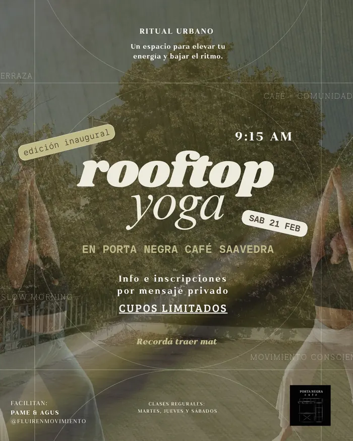
Martes, jueves y sábados · 9:15 hs
Con Pame de Fluir en Movimiento, en la terraza de Saavedra. Cupos limitados: traé tu mat.
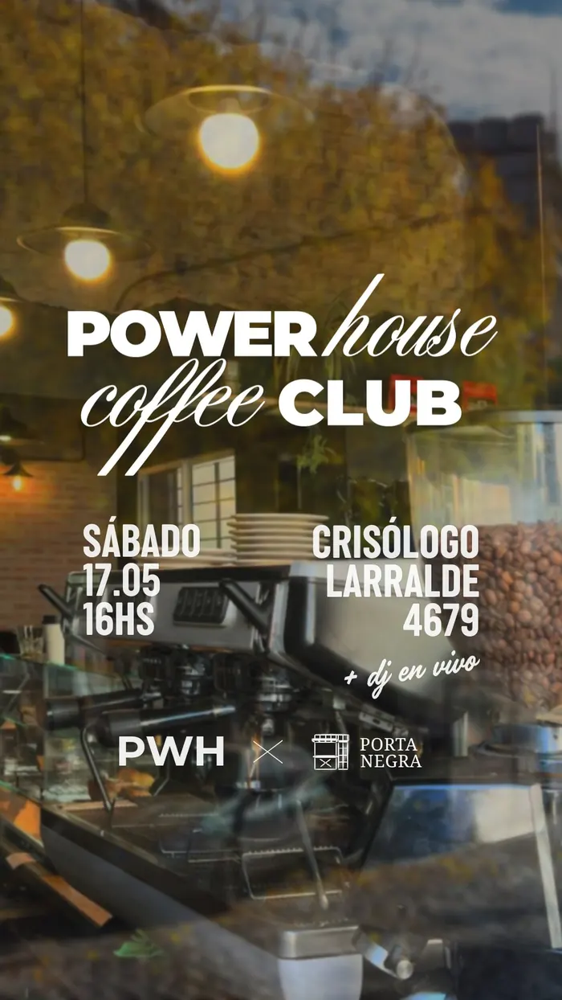
Sábado [fecha a confirmar] · 16:00 hs
Con Powerhouse: café, charlas, buena música y DJ en vivo.
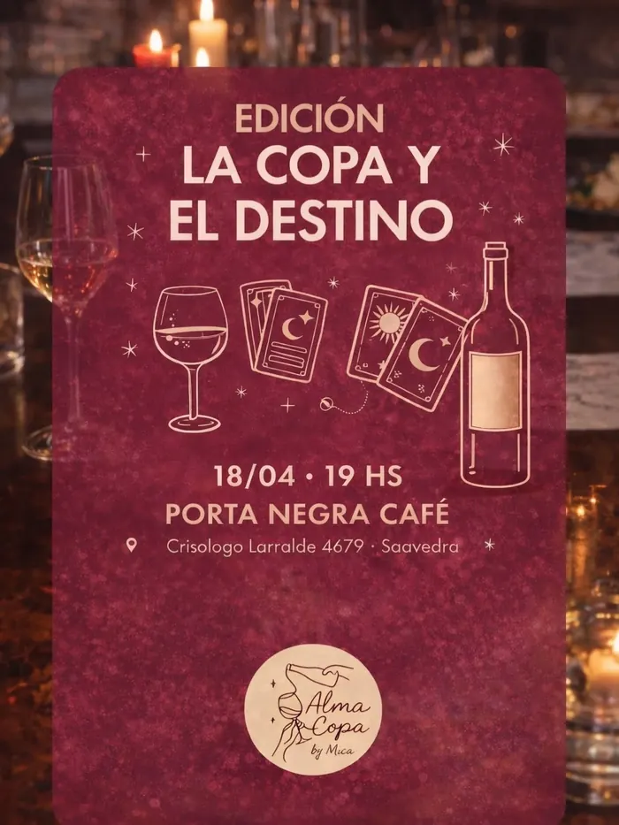
[Fecha a confirmar] · 19:00 hs
“La copa y el destino”: vinos boutique, juegos y astrología para bajar el ritmo.
Nuestro lugar
4,8/5 en Google · 507 reseñas
Pet friendly
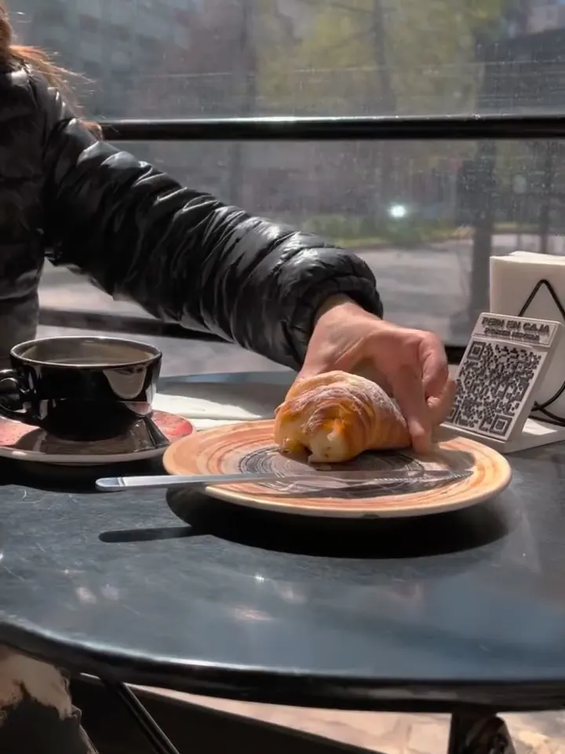
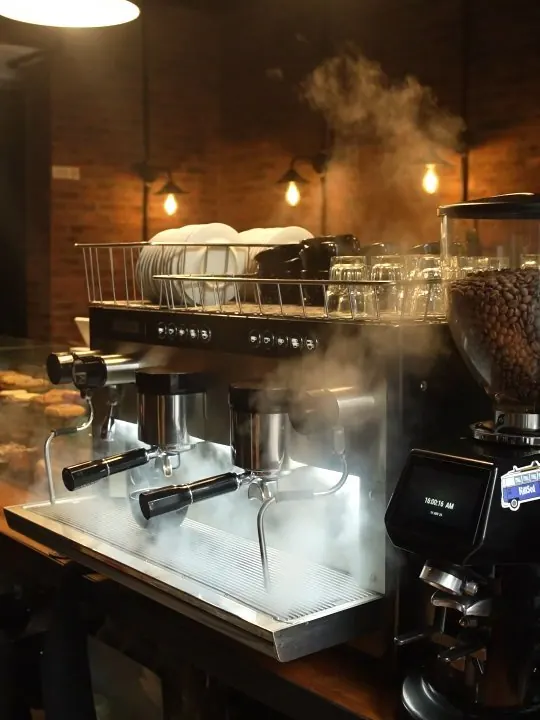
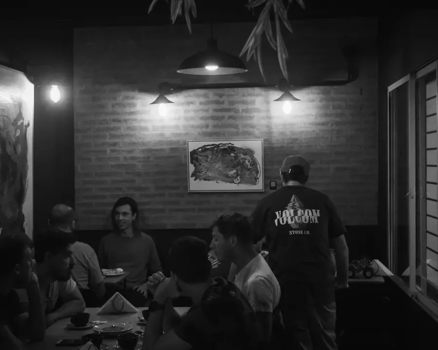
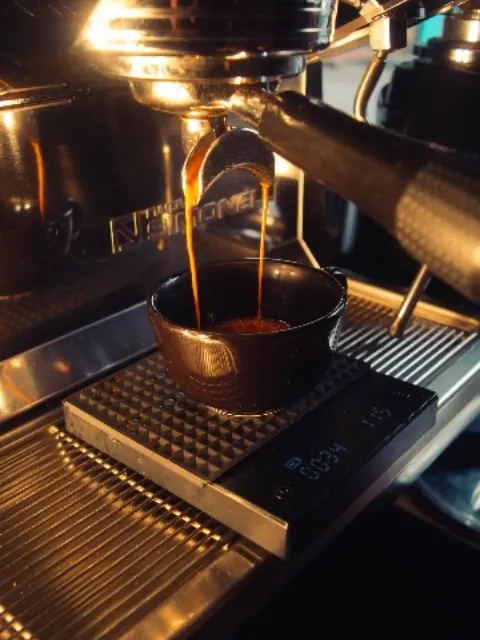
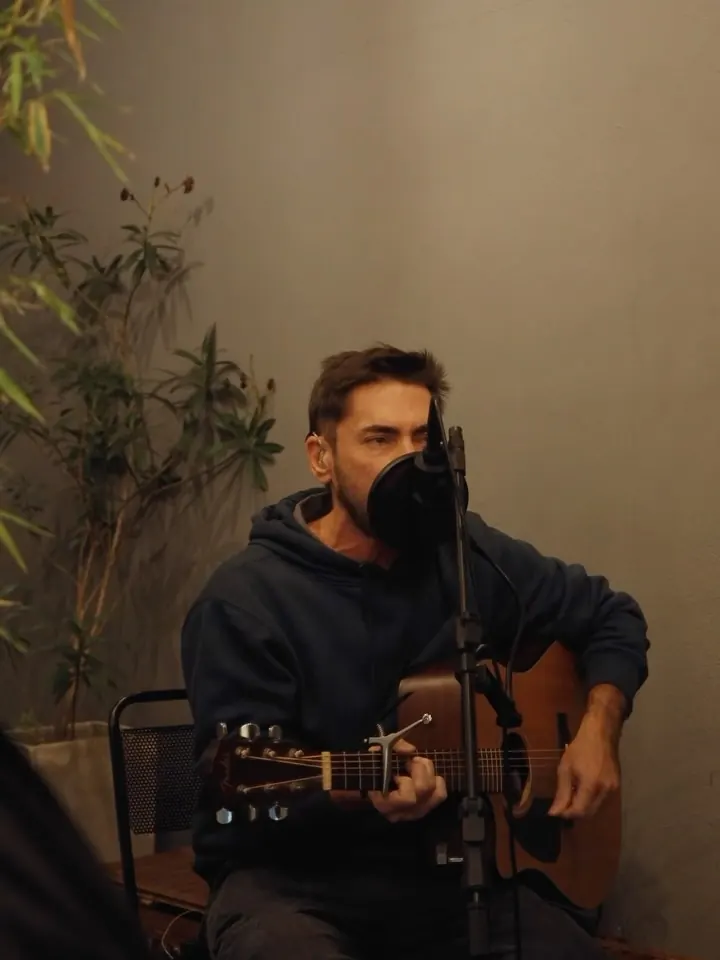
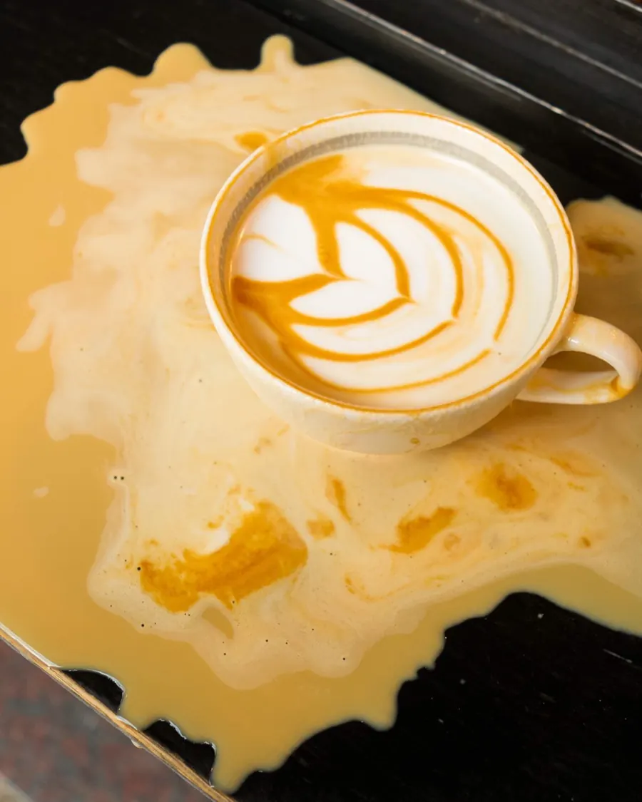
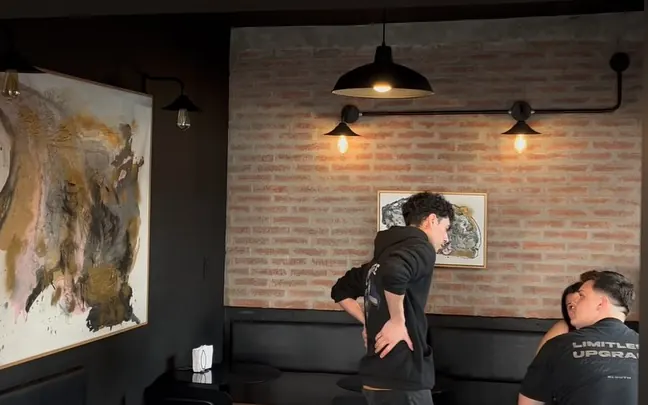
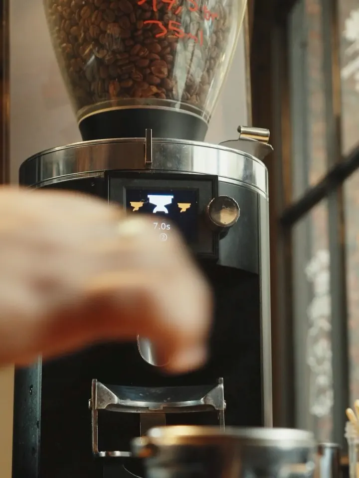